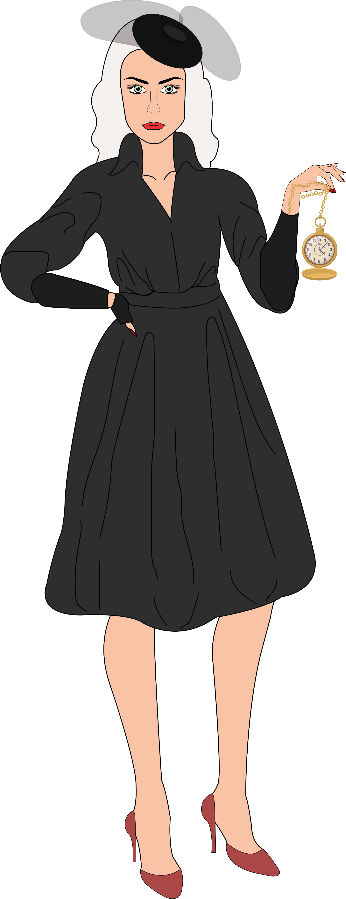
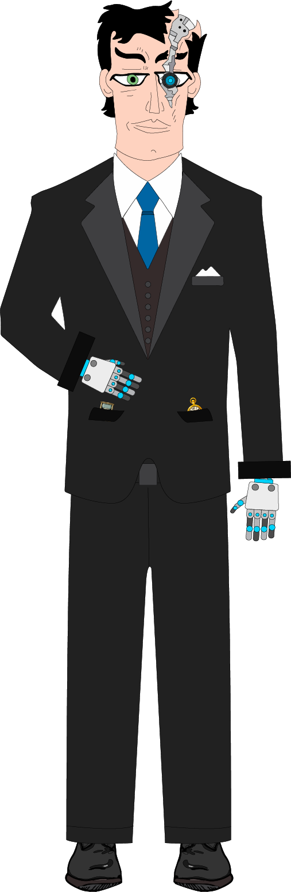

Relojera
Es la menor de dos hermanos, ambos son guardianes del tiempo, siendo ella un
poco menos impulsiva y mas controlada que el. Ambos hermanos llevan una vida muy
tranquila viviendo en el limbo del tiempo, pero si alguien altera el espacio
tiempo viajando entre años, van a haber problemas.
Ella es vanidosa y perfeccionista. Siempre es la que calma a su hermano en
situaciones donde explota de ira, por la cual ella es buena controlando sus
impulsos y es muy paciente.
Relojera

Relojero
Es la oveja negra de la familia, ya que al obtener
el poder del tiempo lo uso para la destrucción,
fue el que provoco la primera y segunda guerra
mundial, aparte de dividir al mundo en creencias,
conspiraciones para así poder tener al mundo en
guerra, sus padres al enterarse lo enviaron al
limbo del tiempo, donde solo podrá salir si un
persona cruza el portal, a la cual se le debe
otorgar una misión, si la incumple será el fin de
la tierra.
Relojero

Julián
Julián
Nació en el año 1868 en un pueblo de Colombia hoy llamado Titiribí, hijo de
padres campesinos, es un joven sensible debido a las situaciones que se ha
tenido que enfrentar en el campo. (No hay mucha info sobre el por su época).